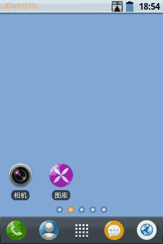
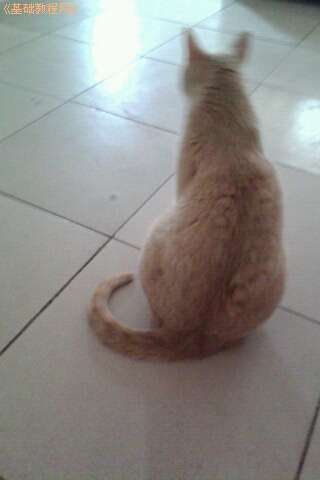
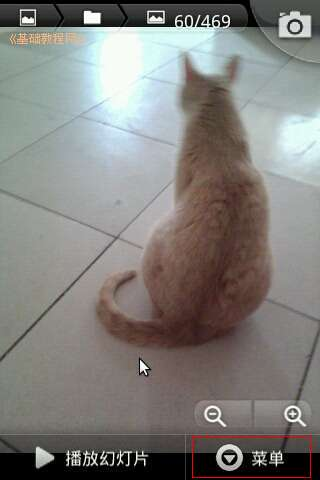
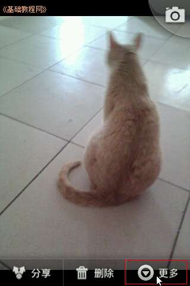
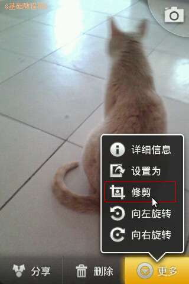
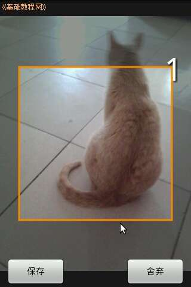
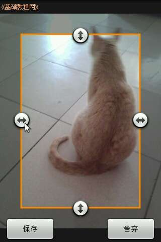
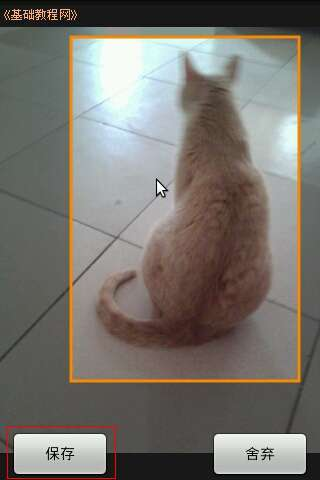
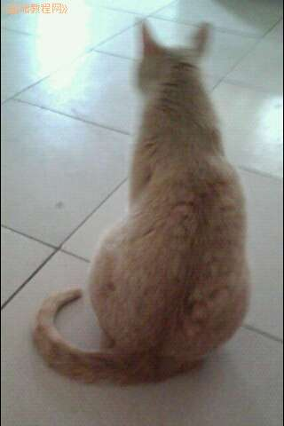
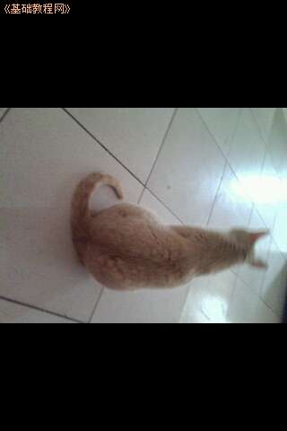

Android 安卓智能手机操作教程
作者：TeliuTe 来源：基础教程网
二十四、裁切图片 返回目录 下一课拍好的照片，有时需要截取其中的一部分，可以用裁切的方法；
1、裁切图片
1）点开相机，拍摄一张照片，或者在文件夹中打开也行；

2）点按右下角的图库，打开相片；

3）在相片里点按一下，下边出来“菜单”；

4）点按“菜单”，出来“更多”；

5）点按“更多”，选择里面的“修剪”或“剪裁”或“裁切”；

6）出来一个方框，在方框边上点一下，四边出来控制点；

7）点按拖动控制点，就可以扩大或缩小方框；

8）点按方框中间，可以移动方框的位置；

9）方框的大小，位置合适后，点下边的“保存”确认，照片就裁切好了；

在“更多”菜单里点旋转，可以将图片方向进行旋转；

本节学习了裁切图片的基础知识，如果你成功地完成了练习，请继续学习下一课内容；
本教程由86团学校TeliuTe制作|著作权所有
基础教程网：http://teliute.org/
美丽的校园……
转载和引用本站内容，请保留作者和本站链接。